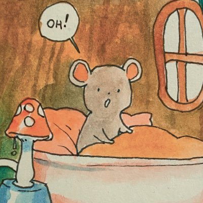

|  | Gena Soh Yue LinJournalist at The Straits Times and a Rackateer otherwise I'm a little complicated as a person but I love using my x-ray eyes to perceive and profile the people that I love. Writing as a profession is deeply rewarding to me and being a journalist allows me to make a living doing what I love. I also enjoy learning and reading. I have a list of books that I've read in 2022 which you can see here. My top three books of the year are also listed below. Other hobbies I have include using Twitter to release the pressure of my Mega-Mind Thoughts that otherwise pummel against my goofy eyeballs and bring me much grief (from being so smart and not having anywhere for my thoughts to go) and also, I live in Singapore and used to be considered a little bit of a writer, but have been suffering from a persistently dyspeptic spell of writer's block. But like my approach to many problems, I hope that if I look away from them, take a walk like June Huh who won the latest Field's Medal, I'll be able to circle back around and miraculously cure my muteness. |